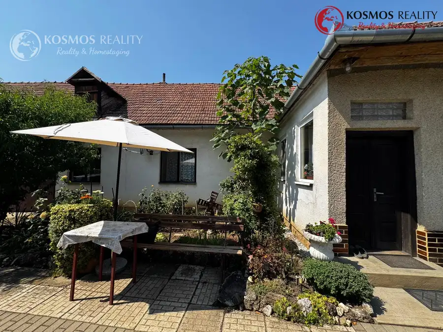
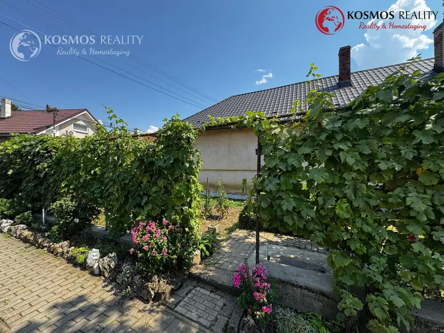
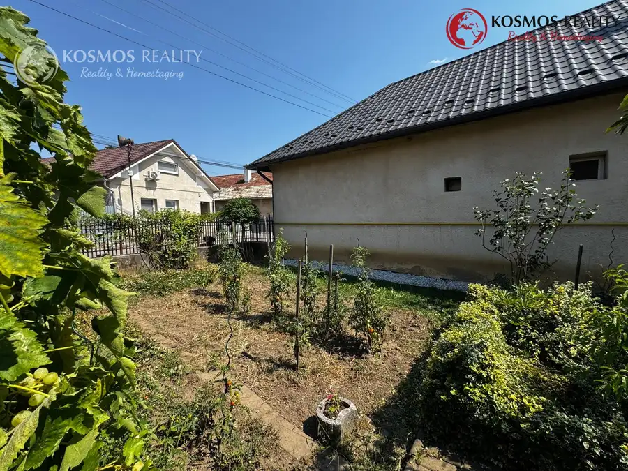
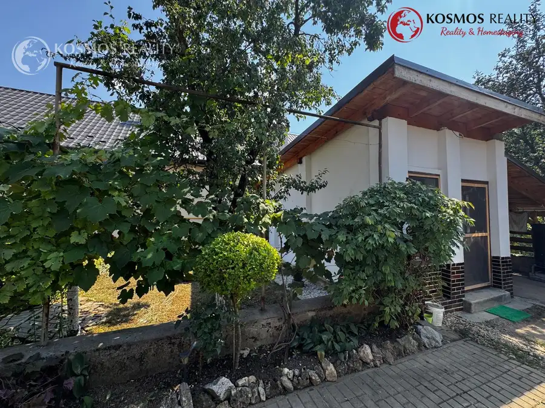

Na predaj rodinný dom v Drienovci s prístupom k potoku
Drienovec





- Plocha523 m²
- StavČiastočná rekonštrukcia
- VlastníctvoOsobné
O nehnuteľnosti
Ponúkame na predaj rodinný dom v obci Drienovec, okres Košice-okolie, situovaný na rovinatom pozemku s celkovou výmerou 809 m². Nehnuteľnosť ponúka príjemný priestor na bývanie, záhradu, hospodárenie aj oddych a zároveň poskytuje možnosť prispôsobiť si bývanie podľa vlastných predstáv.Dom pozostáva z troch izieb, kuchyne, kúpeľne, samostatného WC, chodby a špajze. Dve izby sú riešené ako prechodné. Nehnuteľnosť je čiastočne podpivničená.K domu patrí aj garáž, ktorá je súčasťou domu, ďalej letná kuchyňa a altánok, ktoré vytvárajú príjemné zázemie na trávenie času počas teplejších mesiacov. Pozemok je rovinatý a vhodný aj na pestovanie, pričom jeho súčasťou je záhradná časť a priestor na ďalšie využitie podľa predstáv nového majiteľa.Veľkým benefitom nehnuteľnosti je prístup k potoku zo zadnej časti pozemku, ktorý dodáva nehnuteľnosti príjemnú atmosféru a ponúka ďalšie možnosti využitia záhrady.Technické informácie:pozemok spolu: 809 m²zastavaná plocha a nádvorie: 286 m²orná pôda: 523 m²3 izbykuchyňakúpeľňasamostatné WCšpajzačiastočné podpivničeniegarážletná kuchyňaaltánokrovinatý pozemokprístup k potokuobecná vodakanalizáciaplynvykurovanie kotlom na tuhé palivorevízna správa plynu z roku 2025Nehnuteľnosť je vhodná pre záujemcov, ktorí hľadajú rodinný dom s väčším pozemkom, priestorom na záhradu a možnosťou vytvoriť si bývanie podľa vlastných predstáv.Cena: 220.000 Eur.V prípade záujmu o obhliadku alebo informácii o predmetnej nehnuteľnosti, kontaktujte maklérku Mgr. Lýdia Bereczová 0917 200 922, e-mail: bereczova@kosmosreality.sk
Parametre
- Druh
- Rodinný dom
- Dátum zverejnenia
- 19. 08. 2026
- Plocha pozemku
- 809 m²
- Počet garáží
- 1
- Počet izieb / miestností
- 3
- Počet pivníc
- 1
- Stav nehnuteľnosti
- Čiastočná rekonštrukcia
- Terás
- 1
- Terén pozemku
- Rovinatý
- Typ
- Predaj
- Typ konštrukcie
- Zmiešaná
- Vlastníctvo
- Osobné
- Vybavenie
- Terasa, Garáž, Pivnica, Verejné parkovanie, Špajza, Sklad, Technická miestnosť
- Vykurovanie
- Ústredné
- Zariadenie
- Čiastočne zariadené
- Zastavaná plocha
- 286 m²
- Úžitková plocha
- 523 m²